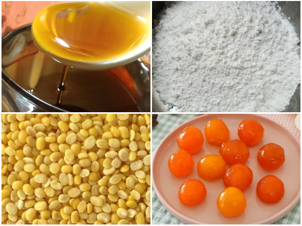

1.cach lam banh trung thu truyen thong
nguyen lieu lam banh trung thu
- - Nguyên liệu nấu nước đường: 1kg đường nâu, 1/2 quả chanh tươi, 600ml nước lọc
- - Nguyên liệu vỏ bánh: 150g bột mì, 100g nước đường bánh nướng, 15g dầu ăn, 1 lòng đỏ trứng gà, 5g mật ong, 10g bơ đậu phộng.
- - Nguyên liệu làm nhân: 350g đậu xanh bỏ vỏ, lòng đỏ trứng muối, 100g đường, 30g bột bánh dẻo, 50g dầu ăn
- - Nguyên liệu quét mặt bánh: 1 lòng đỏ trứng gà, 1/2 thìa nước đường bánh nướng, 1 thìa sữa tươi, 1 thìa dầu ăn.

Cách làm bánh trung thu trứng muối truyền thống
Bước 1: Nấu nước đường bánh nướng